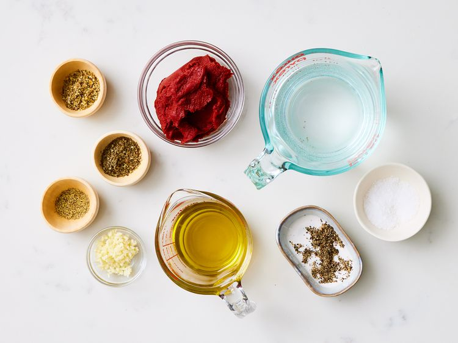
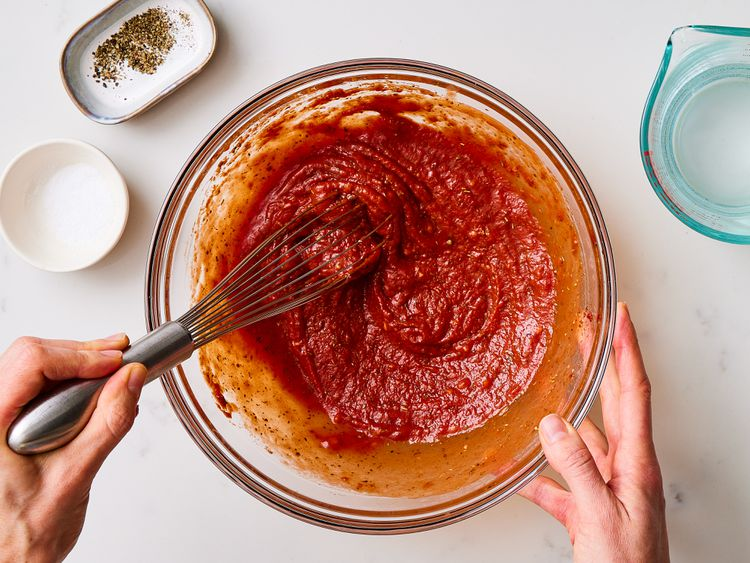
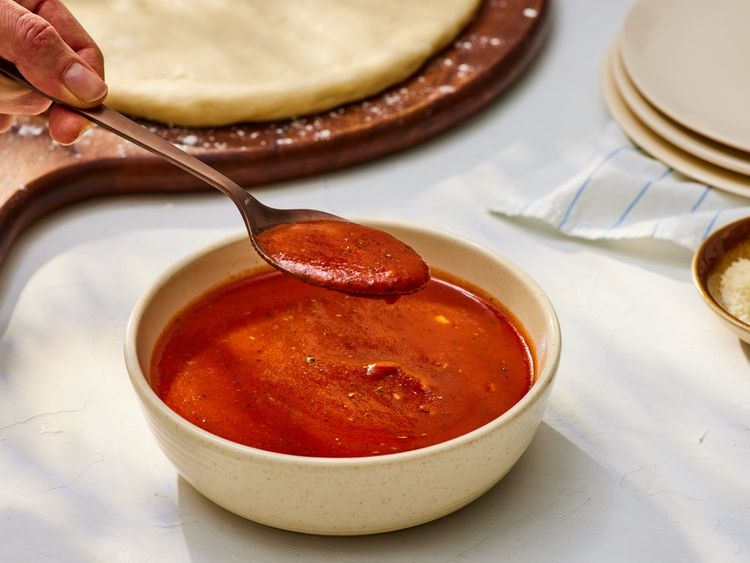

Pizza Sauce
Ingredients
- 1 cups water
- 1 (6 ounce) can tomato paste
- ⅓ cup extra virgin olive oil
- 2 cloves garlic, minced
- ½ tablespoon dried oregano
- ½ tablespoon dried basil
- ½ teaspoon dried rosemary, crushed
- salt and ground black pepper to taste
Directions
- Gather all ingredients 
- Mix together water, tomato paste, and olive oil in a large bowl or jar. Add garlic, oregano, basil, rosemary, salt, and pepper; mix well. 
- Let sauce stand for several hours to let flavors blend. No cooking is necessary; just spread on dough. 